2024年普通高中学业水平选择性考试（湖南卷） 物理
本试卷共100分，考试时间75分钟。
一、选择题：本题共6小题，每小题4分，共24分。在每小题给出的四个选项中，只有一项是符合题目要求的。
相关题目：第 1 题 · 第 2 题 · 第 3 题 · 第 4 题 · 第 5 题 · 第 6 题
返回原卷说明与一、单项选择题
题目与已知条件
量子技术是当前物理学应用研究的热点，下列关于量子论的说法正确的是（ ）
B.光电效应实验中，红光照射可以让电子从某金属表面逸出，若改用紫光照射也可以让电子从该金属表面逸出
C.康普顿研究石墨对 射线散射时，发现散射后仅有波长小于原波长的射线成分
所用高中知识
能量子假说；光电效应的截止频率；康普顿效应；物质波。
读题与思路
逐项对照量子论的四个标志性结论，关键是光电效应只取决于入射光频率是否超过截止频率。
分步解析
- 普朗克提出黑体辐射的能量是一份一份的（），不是连续的，A错误。
- 能否发生光电效应取决于光的频率是否大于截止频率。紫光频率高于红光，红光能使电子逸出，紫光一定也能，B正确。
- 康普顿散射中光子把部分动量交给电子，散射光动量变小，由 知出现波长变长的成分，C错误。
- 德布罗意认为一切实物粒子都具有波动性，电子衍射正是其证据，D错误。
检查与易错点
康普顿散射得到的是“比原波长更长”的成分，而不是更短；光电效应与光强无关、与频率有关。
本题来源：doc-hunan
返回原卷说明与一、单项选择题
题目与已知条件
如图，健身者在公园以每分钟60次的频率上下抖动长绳的一端，长绳自右向左呈现波浪状起伏，可近似为单向传播的简谐横波。长绳上 、 两点平衡位置相距 ， 时刻 点位于波谷， 点位于波峰，两者之间还有一个波谷。下列说法正确的是（ ）
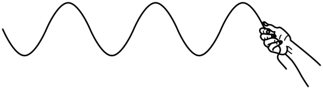
原题图：手抖动长绳形成的波B.波速为
C. 时刻， 点速度为0
D. 时刻， 点速度为0
所用高中知识
波长、频率与波速 ；简谐振动中平衡位置速度最大、最大位移处速度为零。
读题与思路
先由“谷—峰之间还有一个谷”定出 对应的波长数，再由频率求周期，比较给定时刻与周期的关系。
分步解析
- 频率 ，周期 。
- 在谷、 在峰，中间还有一个谷：谷→谷为 ，谷→峰再加 ，故 ，，A错误。
- 波速 ，B错误。
- ， 由波峰回到平衡位置，速度最大，C错误。
- ， 由波谷运动到波峰，速度为0，D正确。
检查与易错点
不要把 间距当作一个或两个波长；“中间还有一个谷”说明相距 。
本题来源：doc-hunan
返回原卷说明与一、单项选择题
题目与已知条件
如图，质量分别为 、、、 的四个小球 、、、，通过细线或轻弹簧互相连接，悬挂于 点，处于静止状态，重力加速度为 。若将 、 间的细线剪断，则剪断瞬间 和 的加速度大小分别为（ ）
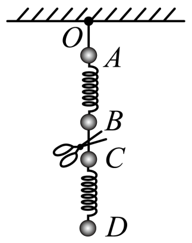
原题图：O—A细线，A—B弹簧，B—C细线，C—D弹簧所用高中知识
弹簧弹力不能突变、细线拉力可以突变；牛顿第二定律。
读题与思路
剪断瞬间两根弹簧的弹力保持剪断前的值，只需分别对 、 受力分析。
分步解析
- 剪断前，、 间弹簧承担下方 、、 的总重：。、 间弹簧承担 的重力：。
- 剪断后对 ：向上弹力 ，向下重力 ，，方向向上。
- 对 ：向下的重力 与弹簧向下拉力 ，，方向向下。
检查与易错点
剪断的是细线，弹簧弹力在瞬间不变； 受下方弹簧的拉力方向向下。
本题来源：doc-hunan
返回原卷说明与一、单项选择题
题目与已知条件
如图，有一硬质导线 ，其中 是半径为 的半圆弧， 为圆弧的中点，直线段 长为 且垂直于直径 。该导线在纸面内绕 点逆时针转动，导线始终在垂直纸面向里的匀强磁场中。则 、、、 各点电势关系为（ ）
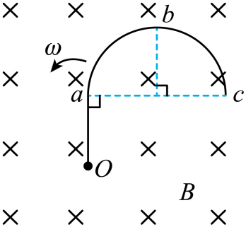
原题图A. B. C. D. 所用高中知识
转动切割：绕端点转动的导体，两端电势差 ，与路径形状无关；右手定则。
读题与思路
任一点与 之间的电势差只取决于该点到 的距离，因此只需算出 、、 的长度并判断方向。
分步解析
- 以 为原点，，半圆直径 水平，圆心为 ，所以 ，。
- ，，。
- 由右手定则，逆时针转动、磁场向里时，导线中正电荷受力指向 ，故 点电势最高；各点电势比 低 。
- 因此 。
检查与易错点
感应电动势只与端点到转轴的距离有关，弧形导线不影响 、 的计算。
本题来源：doc-hunan
返回原卷说明与一、单项选择题
题目与已知条件
真空中有电荷量为 和 的两个点电荷，分别固定在 轴上 和0处。设无限远处电势为0， 正半轴上各点电势 随 变化的图像正确的是（ ）
所用高中知识
点电荷电势 及叠加；函数零点与极值。
读题与思路
写出正半轴上的电势表达式，找零点、极值点和两端趋势，再与图像对照。
分步解析
- 时，。 时 ； 时 。
- 零点：，得 ； 时 ， 时 。
- 极值：，得 ，此处电势取正的最大值，之后逐渐减小趋于0。
- 只有D图满足“从负无穷上升、过零、出现正的极大值后趋于0”。
检查与易错点
正半轴靠近 处电势趋于负无穷，而远处由 主导为正，图像必有零点和正的极大值。
本题来源：doc-hunan
返回原卷说明与一、单项选择题
题目与已知条件
根据国家能源局统计，截止到2023年9月，我国风电装机4亿千瓦，连续13年居世界第一位，湖南在国内风电设备制造领域居于领先地位。某实验小组模拟风力发电厂输电网络供电的装置如图所示。已知发电机转子以角速度 匀速转动，升、降压变压器均为理想变压器，输电线路上的总电阻可简化为一个定值电阻 。当用户端接一个定值电阻 时， 上消耗的功率为 。不计其余电阻，下列说法正确的是（ ）
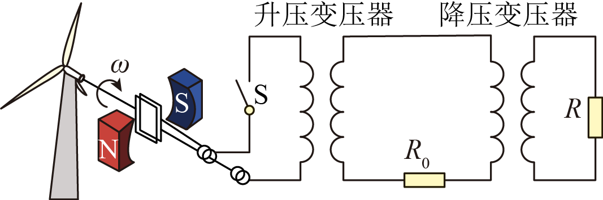
原题图：发电机、升压变压器、输电线 R₀、降压变压器、用户电阻 RA.风速增加，若转子角速度增加一倍，则 上消耗的功率为
B.输电线路距离增加，若 阻值增加一倍，则 消耗的功率为
C.若升压变压器的副线圈匝数增加一倍，则 上消耗的功率为
D.若在用户端再并联一个完全相同的电阻 ，则 上消耗的功率为
所用高中知识
交流发电机电动势 ；理想变压器的电压比与等效电阻 。
读题与思路
把降压变压器及用户电阻等效为输电线末端的电阻 ，输电线电流 ，逐项分析。
分步解析
- 设升压变压器副线圈电压为 ，降压变压器原、副线圈匝数比为 ，则输电线电流 ，。
- A： 加倍，电动势与 加倍， 加倍， 功率变为 ，正确。
- B： 加倍， 不是减半也不加倍，功率不为 ，错误。
- C：副线圈匝数加倍， 加倍， 加倍，功率为 而不是 ，错误。
- D：并联后用户电阻变为 ，，功率小于 ，更不可能为 ，错误。
检查与易错点
输电线电流由整个回路决定，改变用户电阻或 时不能直接按比例套用。
本题来源：doc-hunan
二、选择题：本题共4小题，每小题5分，共20分。在每小题给出的四个选项中，有多项符合题目要求。全部选对的得5分，选对但不全的得3分，有选错的得0分。
相关题目：第 7 题 · 第 8 题 · 第 9 题 · 第 10 题
返回二、多项选择题（20分）
题目与已知条件
2024年5月3日，“嫦娥六号”探测器顺利进入地月转移轨道，正式开启月球之旅。相较于“嫦娥四号”和“嫦娥五号”，本次的主要任务是登陆月球背面进行月壤采集并通过升空器将月壤转移至绕月运行的返回舱，返回舱再通过返回轨道返回地球。设返回舱绕月运行的轨道为圆轨道，半径近似为月球半径。已知月球表面重力加速度约为地球表面的 ，月球半径约为地球半径的 。关于返回舱在该绕月轨道上的运动，下列说法正确的是（ ）
C.其绕月飞行周期约为地球上近地圆轨道卫星周期的 倍
D.其绕月飞行周期约为地球上近地圆轨道卫星周期的 倍
所用高中知识
近表面圆轨道 ，，。
读题与思路
近表面卫星的速度与周期只取决于 和 ，用比例计算。
分步解析
- ，B正确，A错误。
- ，D正确，C错误。
检查与易错点
周期比是 之比，注意分子分母不要颠倒。
本题来源：doc-hunan
返回二、多项选择题（20分）
题目与已知条件
某电磁缓冲装置如图所示，两足够长的平行金属导轨置于同一水平面内，导轨左端与一阻值为 的定值电阻相连，导轨 段与 段粗糙，其余部分光滑， 右侧处于竖直向下的匀强磁场中，一质量为 的金属杆垂直导轨放置。现让金属杆以初速度 沿导轨向右经过 进入磁场，最终恰好停在 处。已知金属杆接入导轨之间的阻值为 ，与粗糙导轨间的摩擦因数为 ，。导轨电阻不计，重力加速度为 ，下列说法正确的是（ ）
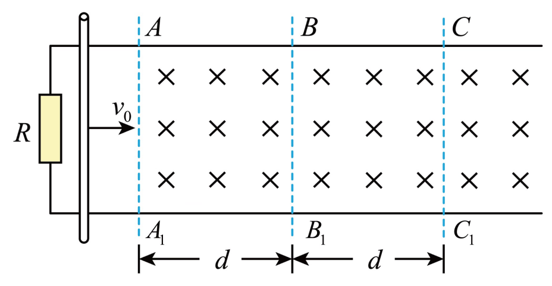
原题图A.金属杆经过 的速度为
B.在整个过程中，定值电阻 产生的热量为
C.金属杆经过 与 区域，金属杆所受安培力的冲量相同
D.若将金属杆的初速度加倍，则金属杆在磁场中运动的距离大于原来的2倍
所用高中知识
动量定理与安培力冲量 ；能量守恒；焦耳热按电阻分配。
读题与思路
安培力冲量只与扫过的距离有关；用“每段的动量变化”比较速度，再用能量守恒求热量。
分步解析
- 设导轨间距 ，总电阻 ，令 。安培力冲量 ，两段长度均为 ，冲量相同，C正确。
- 段：。 段还有摩擦力，设历时 ：。两式相加 ，所以 ，，A错误。
- 全过程 ， 与杆的电阻相等，，B错误。
- 初速度为 时，经过 的速度 ，其中速度更大使在 段用时 ，所以 。 之后只有安培力，还要滑行 ，总距离大于 ，即大于原来 的2倍，D正确。
检查与易错点
摩擦力的冲量与时间有关、安培力的冲量与位移有关；电阻 只分得一半焦耳热。
本题来源：doc-hunan
返回二、多项选择题（20分）
题目与已知条件
1834年，洛埃利用平面镜得到杨氏双缝干涉的结果（称洛埃镜实验），平面镜沿 放置，靠近并垂直于光屏。某同学重复此实验时，平面镜意外倾斜了某微小角度 ，如图所示。 为单色点光源。下列说法正确的是（ ）
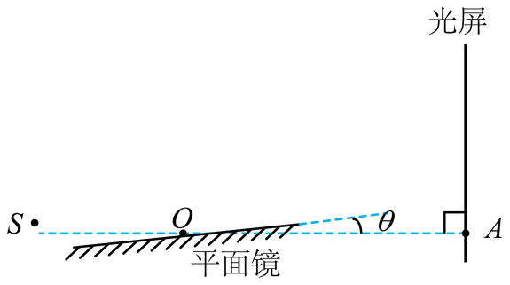
原题图B.沿 向右略微平移平面镜，干涉条纹间距减小
C.若 ，沿 向右略微平移平面镜，干涉条纹间距不变
D.若 ，沿 向左略微平移平面镜，干涉条纹向 处移动
所用高中知识
洛埃镜：光源 与其镜像 相当于双缝，条纹间距 。
读题与思路
判断平移平面镜后镜像 的位置是否改变： 不变则条纹不变；、 间距 变大则间距变小。
分步解析
- 时平面镜在 连线上，沿 （或 ）平移时镜面所在直线不变，镜像 不变，、 都不变，条纹间距不变也不移动，C正确，D错误。
- 镜面向右上倾斜 。沿 向右平移时，同一水平位置处镜面降低，镜面所在直线离 更远， 远离 ， 增大，间距 减小，B正确。
- 沿 向左平移时，镜面所在直线靠近 ， 位置改变，条纹会移动（并且间距增大），A错误。
检查与易错点
平移平面镜是否影响干涉，关键看镜面所在“直线”是否变化，而不是镜子本身是否移动。
本题来源：doc-hunan
返回二、多项选择题（20分）
题目与已知条件
如图，光滑水平面内建立直角坐标系 。、 两小球同时从 点出发， 球速度大小为 ，方向沿 轴正方向， 球速度大小为 、方向与 轴正方向夹角为 。坐标系第一象限中有一个挡板 ，与 轴夹角为 。 球与挡板 发生碰撞，碰后 球速度大小变为 ，碰撞前后 球的速度方向与挡板 法线的夹角相同，且分别位于法线两侧。不计碰撞时间和空气阻力，若 、 两小球能相遇，下列说法正确的是（ ）
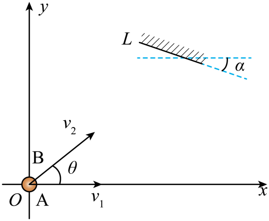
原题图A.若 ，则 的最大值为 ，且
B.若 ，则 的最大值为 ，且
C.若 ，则 的最大值为 ，且
D.若 ，则 的最大值为 ，且
所用高中知识
匀速直线运动；反射定律的几何表示；正弦定理与三角函数最值。
读题与思路
设 在 点碰板、在 轴上 点与 相遇，三角形 的角由 、 确定，用正弦定理把 写成 的函数求最大值。
分步解析
- 挡板向右下倾斜 ，按反射定律，碰后速度方向与 轴正方向成 角。记 ，三角形 中 ，，。
- 由正弦定理 。相遇要求 走 的时间等于 的总时间：。
- 对 求导令其为零：，即 ，得 。
- ：，，，A正确、B错误。
- ：，，，C正确、D错误。
检查与易错点
碰后速率变为 ，计算总时间时两段要用不同速率；最值条件 对两种 都成立。
本题来源：doc-hunan
返回三、非选择题（56分）
题目与已知条件
某实验小组要探究一金属丝的阻值随气压变化的规律，搭建了如图（a）所示的装置。电阻测量原理如图（b）所示， 是电源，V为电压表，A为电流表。
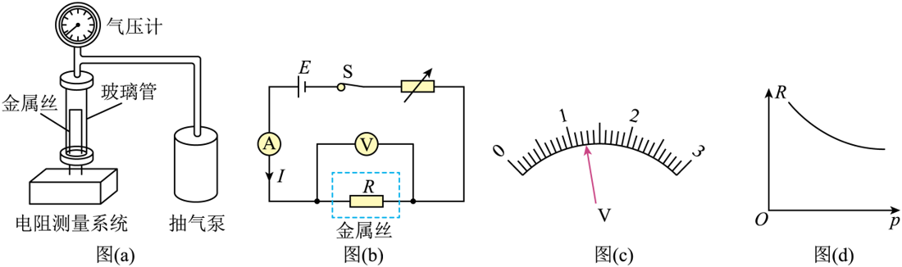
原题图（a）装置、（b）电路、（c）电压表表盘、（d）R—p图线
（1）保持玻璃管内压强为1个标准大气压，电流表示数为100 mA，电压表量程为3 V，表盘如图（c）所示，示数为______V，此时金属丝阻值的测量值 为______Ω（保留3位有效数字）；
（2）打开抽气泵，降低玻璃管内气压 ，保持电流 不变，读出电压表示数 ，计算出对应的金属丝阻值；
（3）根据测量数据绘制 — 关系图线，如图（d）所示；
（4）如果玻璃管内气压是0.5个标准大气压，保持电流为100 mA，电压表指针应该在图（c）指针位置的______侧（填“左”或“右”）；
（5）若电压表是非理想电压表，则金属丝电阻的测量值______真实值（填“大于”“小于”或“等于”）。
所用高中知识
电表读数与估读；欧姆定律；电流表外接法的系统误差。
读题与思路
量程3 V的表盘每小格0.1 V，需估读到0.01 V；由图（d）判断气压降低时电阻的变化方向。
分步解析
- （1）3 V量程最小分度0.1 V，指针在1.2与1.3之间偏1.2约三成，读数 ；。
- （4）由图（d），气压越低电阻越大；电流保持100 mA， 变大，指针应在原位置右侧。
- （5）图（b）中电压表并联在金属丝两端、电流表测的是总电流，非理想电压表分流使电流测量值偏大， 小于真实值。
答案
（1）1.23；12.3 （4）右 （5）小于
检查与易错点
读数要估读到最小分度的下一位；外接法测量值偏小，内接法偏大。
本题来源：doc-hunan
返回三、非选择题（56分）
题目与已知条件
在太空，物体完全失重，用天平无法测量质量。如图，某同学设计了一个动力学方法测量物体质量的实验方案，主要实验仪器包括：气垫导轨、滑块、轻弹簧、标准砝码、光电计时器和待测物体，主要步骤如下：
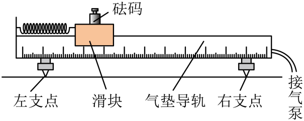
原题图
（1）调平气垫导轨，将弹簧左端连接气垫导轨左端，右端连接滑块；
（2）将滑块拉至离平衡位置20 cm处由静止释放，滑块第1次经过平衡位置处开始计时，第21次经过平衡位置时停止计时，由此测得弹簧振子的振动周期 ；
（3）将质量为 的砝码固定在滑块上，重复步骤（2）；
（4）依次增加砝码质量 ，测出对应的周期 ，实验数据如下表所示，在图中绘制 — 关系图线______；
| 0.000 |
0.632 |
0.399 |
| 0.050 |
0.775 |
0.601 |
| 0.100 |
0.893 |
0.797 |
| 0.150 |
1.001 |
1.002 |
| 0.200 |
1.105 |
1.221 |
| 0.250 |
1.175 |
1.381 |
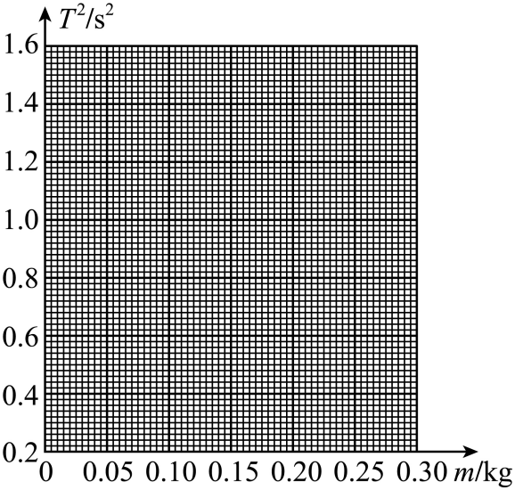
原题坐标纸
（5）由 — 图像可知，弹簧振子振动周期的平方与砝码质量的关系是______（填“线性的”或“非线性的”）；
（6）取下砝码后，将待测物体固定在滑块上，测量周期并得到 ，则待测物体质量是______kg（保留3位有效数字）；
（7）若换一个质量较小的滑块重做上述实验，所得 — 图线与原图线相比将沿纵轴______移动（填“正方向”“负方向”或“不”）。
所用高中知识
弹簧振子周期 ；图像法处理数据。
读题与思路
是关于 的一次函数；用拟合直线由 反求质量。
分步解析
- （4）描点后各点近似在一条直线上，用直线连接（舍去偏离较大的点，使点均匀分布在两侧）。
- （5） 与 的关系是线性的。
- （6）最小二乘拟合：斜率约 ，截距约 。由 得 （作图读数在0.118～0.122 kg范围内均合理）。
- （7）截距 随滑块质量 减小而减小，斜率 不变，图线沿纵轴负方向平移。
答案
（4）一条过各点附近的直线 （5）线性的 （6）0.120 （7）负方向
检查与易错点
第1次到第21次经过平衡位置共经历10个周期；图线平移判断看截距，不是斜率。
本题来源：doc-hunan
返回三、非选择题（56分）
题目与已知条件
一个充有空气的薄壁气球，气球内气体压强为 、体积为 。气球内空气可视为理想气体。
（1）若将气球内气体等温膨胀至大气压强 ，求此时气体的体积 （用 、 和 表示）；
（2）小赞同学想测量该气球内气体体积 的大小，但身边仅有一个电子天平。将气球置于电子天平上，示数为 （此时须考虑空气浮力对该示数的影响）。小赞同学查阅资料发现，此时气球内气体压强 和体积 还满足：，其中 为大气压强， 为气球无张力时的最大容积， 为常数。已知该气球自身质量为 ，外界空气密度为 ，求气球内气体体积 的大小。
所用高中知识
玻意耳定律；浮力；同温下气体密度与压强成正比。
读题与思路
天平示数 = 气球质量 + 球内空气质量 − 浮力对应质量。球内空气质量用（1）的结论表示，得到 ，再与题给关系联立。
分步解析
- （1）等温：，。
- （2）球内空气质量 ，浮力 。平衡：，即 。
- 代入：。
- 由 得 ，。
- 所以 。
答案
（1）；（2）
检查与易错点
示数中要同时计入球内空气的质量和外界空气的浮力；两者之差才与 有关。
本题来源：doc-hunan
返回三、非选择题（56分）
题目与已知条件
如图，有一内半径为 、长为 的圆筒，左右端面圆心 、 处各开有一小孔。以 为坐标原点，取 方向为 轴正方向建立 坐标系。在筒内 区域有一匀强磁场，磁感应强度大小为 ，方向沿 轴正方向；筒外 区域有一匀强电场，场强大小为 ，方向沿 轴正方向。一电子枪在 处向圆筒内多个方向发射电子，电子初速度方向均在 平面内，且在 轴正方向的分速度大小均为 。已知电子的质量为 、电量为 ，设电子始终未与筒壁碰撞，不计电子之间的相互作用及电子的重力。
（1）若所有电子均能经过 进入电场，求磁感应强度 的最小值；
（2）取（1）问中最小的磁感应强度 ，若进入磁场中电子的速度方向与 轴正方向最大夹角为 ，求 的绝对值；
（3）取（1）问中最小的磁感应强度 ，求电子在电场中运动时 轴正方向的最大位移。
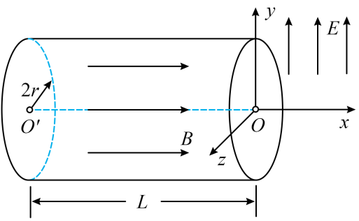
原题图所用高中知识
带电粒子在匀强磁场中的螺旋运动（周期与速度无关）；类平抛运动。
读题与思路
沿 方向匀速、垂直磁场方向做圆周运动，回到轴线需要整数个周期；不碰壁限制圆周半径；出磁场时速度恢复初始方向。
分步解析
- （1）垂直 轴的分运动是过轴线的匀速圆周运动，周期 。经过 需 （），，最小值 。
- （2）圆周过轴线，离轴最远距离为直径 ，不碰壁要求 ，，。所以 。
- （3）恰好一个周期后电子回到 ，速度与入射时相同：， 沿 时最大为 。电子在电场中受力 沿 ，加速度 。
- 方向最大位移 。
答案
（1）；（2）；（3）
检查与易错点
圆周过轴线，离轴最大距离是直径而不是半径；电子带负电，电场力方向与 相反。
本题来源：doc-hunan
返回三、非选择题（56分）
题目与已知条件
如图，半径为 的圆环水平放置并固定，圆环内有质量为 和 的小球A和B（）。初始时小球A以初速度 沿圆环切线方向运动，与静止的小球B发生碰撞。不计小球与圆环之间的摩擦，两小球始终在圆环内运动。
（1）若小球A与B碰撞后结合在一起，求碰撞后小球组合体的速度大小及做圆周运动所需向心力的大小；
（2）若小球A与B之间为弹性碰撞，且所有的碰撞位置刚好位于等边三角形的三个顶点，求小球的质量比 ；
（3）若小球A与B之间为非弹性碰撞，每次碰撞后的相对速度大小为碰撞前的相对速度大小的 倍（），求第1次碰撞到第 次碰撞之间小球B通过的路程。
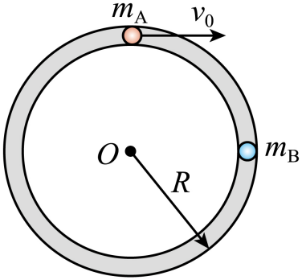
原题图所用高中知识
动量守恒；弹性碰撞的速度公式；相对运动追及；等比数列求和。
读题与思路
圆环内两球沿同一圆周运动，相邻碰撞间“快球比慢球多走一圈”。用相对速度求时间，用质心速度表示各球速度。
分步解析
- （1），；向心力 。
- （2）弹性碰撞后 （），，相对速度为 。B再追上A需多走一圈，历时 ，A转过 弧度。第2次碰撞后两球速度恢复为 ，A需绕行一整圈才再与B相碰，第3次碰撞与第2次在同一点；之后重复。于是相邻不同碰撞点间隔 。
- 碰撞点构成等边三角形三个顶点，要求 或 ，即 或 。由 得 或 。
- （3）质心速度 。第 次碰撞后相对速度大小为 ，方向交替，B的速度 。
- 第 次与第 次碰撞间隔 ，B的路程 。
- 对 到 求和，交错项之和为0：。
答案
（1），；（2） 或 ；（3）
检查与易错点
第（2）问两种转角（120°与240°）都能使碰撞点构成等边三角形，不能漏解；第（3）问B的速度始终为正，路程等于速率乘时间。
本题来源：doc-hunan
题源与核验说明
- 2024年高考真题——物理（湖南卷）Word版含解析【KS5U 高考】.docx所附湖南卷原卷文件（题文、图与参考答案）；SHA-256：ba51b72b9db4d9dae59d1294fba52d1c4da08651796626fe61bf674864d7ec07
- 所附湖南卷原卷文件逐题转录题干、选项、图与数据表；所附解析仅作推导后的交叉核对。